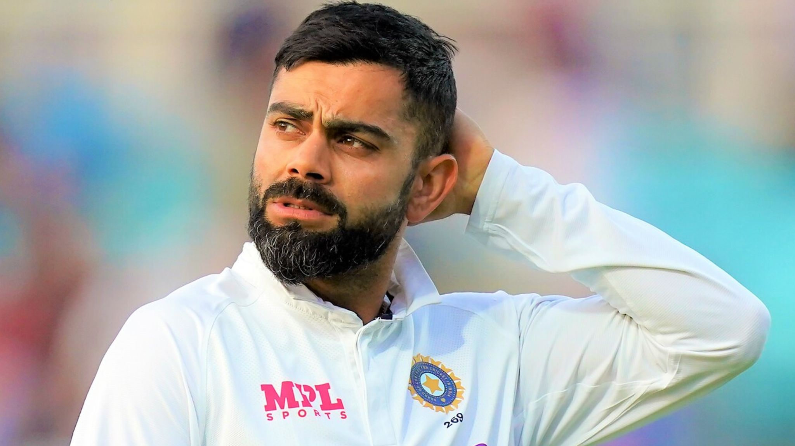
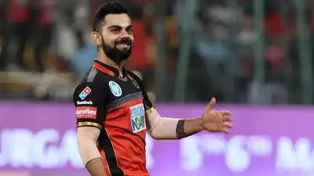
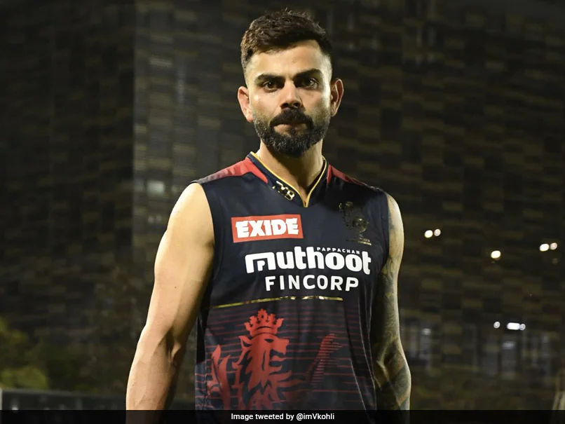
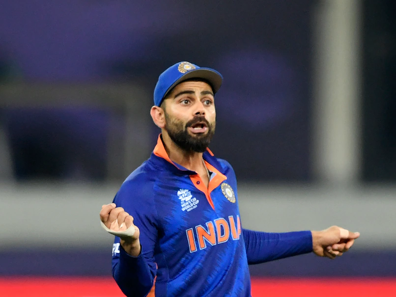
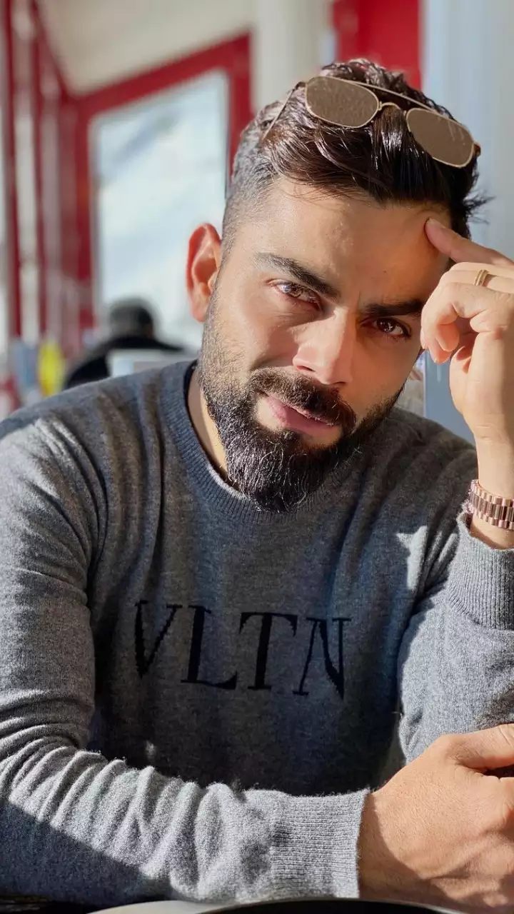

☛ He plays for Delhi in domestic cricket and Royal Challengers Bangalore in the Indian Premier League as a right-handed batsman.
☛ He is often considered one of the best batsmen of his era and some critics believe him to be one of the best limited-overs batsmen in history.
☛ Kohli made his Test debut in 2011.
☛ Kohli has been the recipient of many awards– most notably the Sir Garfield Sobers Trophy (ICC Men's Cricketer of the Decade): 2011–2020; Sir Garfield Sobers Trophy (ICC Cricketer of the Year) in 2017 and 2018; ICC Test Player of the Year (2018); ICC ODI Player of the Year (2012, 2017, 2018) and Wisden Leading Cricketer in the World (2016, 2017 and 2018).